このサイトはRabyの作った自己満サイトです
このサイトから学べることは少ないと思います。しかし、新しい発見の手助けと なればと思います。新しい視点を得たり、興味を持つテーマを見つけたりするこ とができるでしょう。是非、お楽しみいただければ幸いです。
また、このようなことをやってほしいという要望があれば、ぜひお知らせくださ い。私たちは皆さまのご意見を大切にし、より良いサービスを提供できるよう努 めております。どんな小さなことでも構いませんので、皆さまのアイデアをお待 ちしております。

皆さんはアイアンマンご存じですか？ 今回は、アイアンマンの腕に搭載されている武器、リパルサー・ビームの作成を行います。 ジャイロセンサーを使って手首の角度を図り特定の値を出すことができたら LEDが点灯させます。ジャイロセンサーは様々なことに使われています学んでおいて損はないでしょう。それではやっていきましょう
Wire.h：I2C通信を行うための標準ライブラリ
Adafruit_NeoPixel.h：Adafruit社のNeoPixel RGB LEDストリップを制御するためのライブラリ
#include <Wire.h>
#include <Adafruit_NeoPixel.h>
MPU6050_ADDR：MPU-6050センサーのI2Cアドレスで、0x68に設定されています
PIN_SIG：LEDストリップを制御するためのピン番号です。このプログラムではピン2が使用されています
NUM_PIXELS：LEDストリップのLEDの数を定義します。このプログラムでは8個のLEDを制御します。
pixels：NeoPixelオブジェクトを作成し、LEDストリップを初期化します。NEO_GRB +
NEO_KHZ800はLEDの色順序と信号周波数を設定します
ax, ay, az, gx, gy, gz, Temp：センサーデータを格納する変数。
頭文字にaがついてている物は各軸の加速度を意味します。
また、頭文字にgがついているものは各軸の角速度を意味します。
prevGy：前回のy軸角速度の値を格納する変数
threshold：閾値を定義します。y軸角速度の変化がこの閾値を下回った場合にLEDを点灯させます
#define MPU6050_ADDR 0x68
const int PIN_SIG = 2;
const int NUM_PIXELS = 8;
Adafruit_NeoPixel pixels(NUM_PIXELS, PIN_SIG, NEO_GRB + NEO_KHZ800);
int16_t ax, ay, az, gx, gy, gz, Temp;
int16_t prevGy = 0;
const int threshold = -200;
Serial.begin(115200)：シリアル通信を115200bpsで開始します
Wire.begin()：I2C通信を初期化します
Wire.beginTransmission(MPU6050_ADDR),Wire.write(0x6B)：一連のコマンドは、MPU-6050センサーの電源管理レジスタを設定し、センサーを起動させます
pixels.begin(),pixels.setBrightness(20)：NeoPixel
LEDストリップを初期化し、,pixels.setBrightness(20)はLEDの明るさを20に設定します
void setup() {
Serial.begin(115200);
Serial.println("--- Started ---");
Wire.begin();
Wire.beginTransmission(MPU6050_ADDR);
Wire.write(0x6B);
Wire.write(0x00);
Wire.endTransmission();
pixels.begin();
pixels.setBrightness(20);
}
この部分では、MPU-6050センサーから14バイトのデータを読み取ります。I2C通信を使用してセンサーにアクセスし、加速度、温度、角速度のデータを取得します。
Wire.read()：上位バイトを読み取ります
<< 8：上位バイトを8ビット左シフトします。これにより、上位バイトが16ビットの上位部分に移動します
Wire.read()：下位バイトを読み取ります
|：（ビット論理和）演算子を使って上位バイトと下位バイトを結合します
void loop() {
Wire.beginTransmission(MPU6050_ADDR);
Wire.write(0x3B);
Wire.endTransmission(false);
Wire.requestFrom(MPU6050_ADDR, 14, true);
ax = Wire.read() << 8 | Wire.read();
ay = Wire.read() << 8 | Wire.read();
az = Wire.read() << 8 | Wire.read();
Temp = Wire.read() << 8 | Wire.read();
gx = Wire.read() << 8 | Wire.read();
gy = Wire.read() << 8 | Wire.read();
gz = Wire.read() << 8 | Wire.read();
読み取ったセンサーデータをシリアルモニタに表示します。加速度データは16384.0で割り、角速度データは131.0で割ることで実際の値に変換します。
Serial.print(ax / 16384.0); Serial.print(" g, ");
Serial.print(ay / 16384.0); Serial.print(" g, ");
Serial.print(az / 16384.0); Serial.print(" g, ");
Serial.print(gx / 131.0); Serial.print(" deg/s, ");
Serial.print(gy / 131.0); Serial.print(" deg/s, ");
Serial.print(gz / 131.0); Serial.println(" deg/s, ");
y軸角速度の現在の値と前回の値の差が閾値（-200）を下回った場合、lightUpLEDs関数を呼び出してLEDを点灯させます。
最後に、前回のy軸角速度の値を更新し、20ミリ秒の遅延を設定します。
if (gy - prevGy < threshold * 131) {
lightUpLEDs();
}
prevGy = gy;
delay(20);
}
lightUpLEDs：関数はLEDの明るさを徐々に増減させ、赤色に点灯させます
void lightUpLEDsWhite() {
for (int j = 0; j < 2; j++) { // 明るくするのと暗くするのを2回繰り返す
// LEDを徐々に明るくする
for (int brightness = 0; brightness <= 255; brightness += 5) {
pixels.clear();
for (int i = 0; i < NUM_PIXELS; i++) {
// RGB値をすべて最大（255）に設定して白色にする
pixels.setPixelColor(i, pixels.Color(brightness, brightness, brightness));
}
pixels.show();
delay(20);
}
// LEDを徐々に暗くする
for (int brightness = 255; brightness >= 0; brightness -= 5) {
pixels.clear();
for (int i = 0; i < NUM_PIXELS; i++) {
pixels.setPixelColor(i, pixels.Color(brightness, brightness, brightness));
}
pixels.show();
delay(20);
}
}
}
#include <Wire.h>
#include <Adafruit_NeoPixel.h>
// MPU-6050 I2Cアドレス
#define MPU6050_ADDR 0x68
// RGB LED設定
const int PIN_SIG = 2;
const int NUM_PIXELS = 8;
Adafruit_NeoPixel pixels(NUM_PIXELS, PIN_SIG, NEO_GRB + NEO_KHZ800);
// センサデータを格納する変数
int16_t ax, ay, az, gx, gy, gz, Temp;
int16_t prevGy = 0;
const int threshold = -200; // -200度の変化を検出する閾値
void setup() {
Serial.begin(115200);
Serial.println("--- Started ---");
Wire.begin();
// MPU6050の初期化
Wire.beginTransmission(MPU6050_ADDR);
Wire.write(0x6B); // MPU6050_PWR_MGMT_1レジスタ
Wire.write(0x00); // センサを起動するために0を設定
Wire.endTransmission();
pixels.begin();
pixels.setBrightness(20);
}
void loop() {
// センサデータの読み取り
Wire.beginTransmission(MPU6050_ADDR);
Wire.write(0x3B);
Wire.endTransmission(false);
Wire.requestFrom(MPU6050_ADDR, 14, true);
ax = Wire.read() << 8 | Wire.read();
ay = Wire.read() << 8 | Wire.read();
az = Wire.read() << 8 | Wire.read();
Temp = Wire.read() << 8 | Wire.read();
gx = Wire.read() << 8 | Wire.read();
gy = Wire.read() << 8 | Wire.read();
gz = Wire.read() << 8 | Wire.read();
// センサデータの変換と表示
Serial.print(ax / 16384.0); Serial.print(" g, ");
Serial.print(ay / 16384.0); Serial.print(" g, ");
Serial.print(az / 16384.0); Serial.print(" g, ");
Serial.print(gx / 131.0); Serial.print(" deg/s, ");
Serial.print(gy / 131.0); Serial.print(" deg/s, ");
Serial.print(gz / 131.0); Serial.println(" deg/s, ");
// y軸角速度が前回よりも200度以上低下した場合にLEDを点灯
if (gy - prevGy < threshold * 131) {
lightUpLEDs();
}
// 前回のgy値を更新
prevGy = gy;
delay(20);
}
void lightUpLEDs() {
for (int j = 0; j < 2; j++) { // 明るくするのと暗くするのを2回繰り返す
// LEDを徐々に明るくする
for (int brightness = 0; brightness <= 255; brightness += 5) {
pixels.clear();
for (int i = 0; i < NUM_PIXELS; i++) {
pixels.setPixelColor(i, pixels.Color(brightness, 0, 0));
}
pixels.show();
delay(20);
}
// LEDを徐々に暗くする
for (int brightness = 255; brightness >= 0; brightness -= 5) {
pixels.clear();
for (int i = 0; i < NUM_PIXELS; i++) {
pixels.setPixelColor(i, pixels.Color(brightness, 0, 0));
}
pixels.show();
delay(20);
}
}
}
ジャイロセンサーから送られてくる数値がある値よりも大きいまたは小さいときに光らせるためのLEDを設置します。
今回は私はArduino Unoボードを使用します。ボードをUSBケーブルでパソコンに接続し、電源を供給します。

LEDリングの「VCC」ピンをArduino Unoの「5V」ピンに接続します（紫）
LEDリングの「GND」ピンをArduino Unoの「GND」ピンに接続します（緑）
LEDリングの「DIN」ピンをArduino Unoのデジタルピン2に接続します（灰）
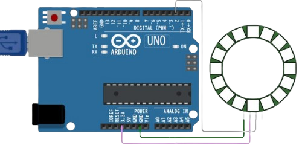手首の値を確認するためにジャイロセンサーを付けましょう
GNDピン：MPU-6050の「GND」ピンをジャンパーワイヤーを使ってArduino Unoの「GND」ピンに接続します。（青）
VCCピン：MPU-6050の「VCC」ピンをジャンパーワイヤーを使ってArduino Unoの「5V」ピンに接続します。（白）
SDAピン：MPU-6050の「SDA」ピンをジャンパーワイヤーを使ってArduino Unoの「SDA」ピンに接続します。（赤）
SCLピン：MPU-6050の「SCL」ピンをジャンパーワイヤーを使ってArduino Unoの「SCL」ピンに接続します。（黒）
Arduinoに輪ゴムを3個使って手首に通すための輪っかを作ります。
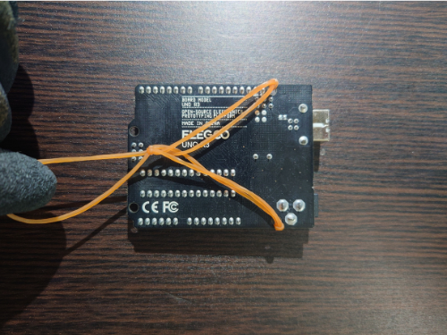パソコンからの電力供給だと手首が動かしずらいので動かしやすいようにバッテリーパックから電力を供給するために先ほど付けた 輪ゴムの真ん中に付けます。
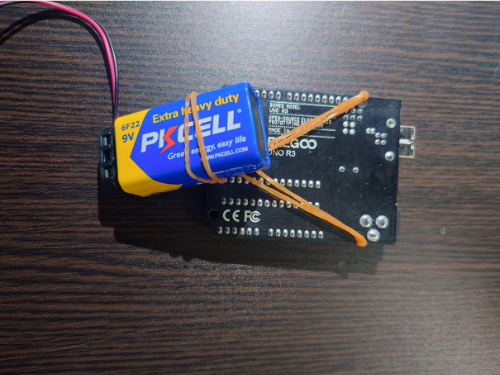次に手のひらにつけるためのLEDに3個の輪ゴム使って輪っかを作成します。真ん中の輪ゴムは邪魔になるので適度に長さを残して 切ってあげてください。短く切りすぎると両端の輪ゴムが切れてしまします。
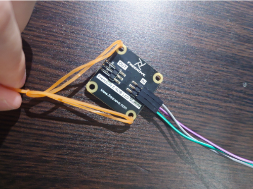Arduinoに付けられているはんだから手を保護するために手袋を装着しましょう。手の皮膚が厚く痛みを感じないのであれば そのままでも結構です。手袋をつけることを強くお勧めします。
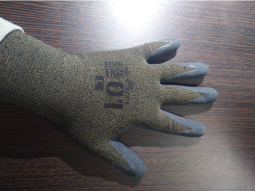Arduinoを手首に装着しますこの時に手首の可動域を抑制しないように調整してください
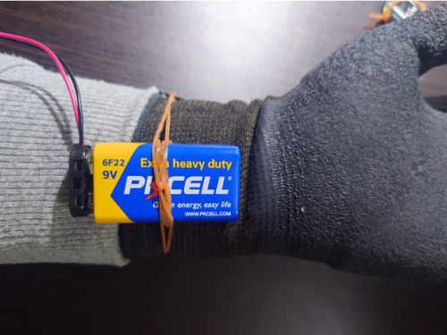手のひらにLEDをくくりましょう
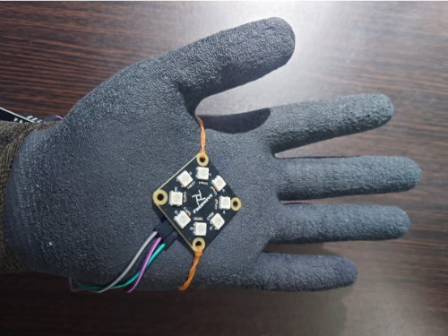ジャイロセンサを先ほどくくった輪ゴムの後ろにはさむように
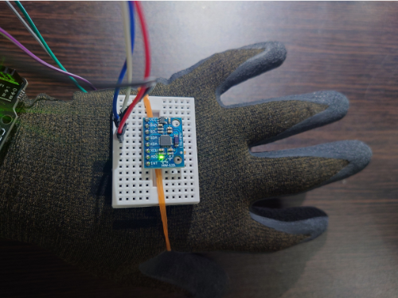Arduino IDEに書いたプログラムをArduinoにコンパイルしましょう。
下の画像に手首をバッテリーパックに近づけるように曲げましょう。
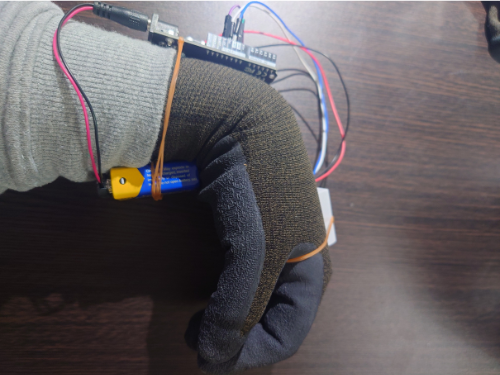手首を上方向にむけます。この時、上に思いっきり振ったのち静止してください。
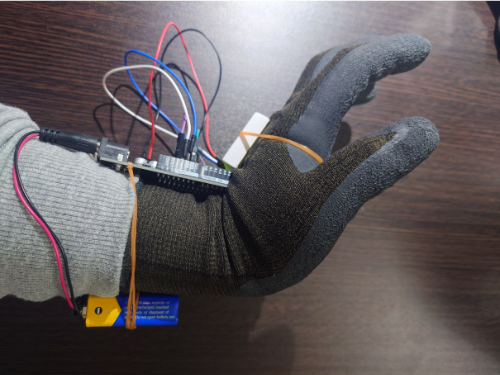このように赤色にLEDが点灯すれば成功です。本家の場合は青白く発光しているので変更してみたい人はプログラムを改造してみてください。
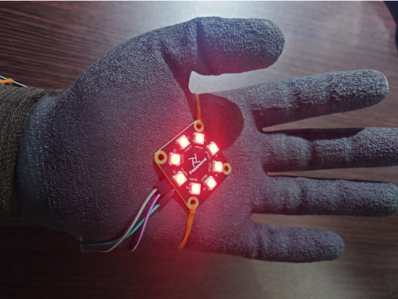このサイトはRabyの作った自己満サイトです
このサイトから学べることは少ないと思います。しかし、新しい発見の手助けと なればと思います。新しい視点を得たり、興味を持つテーマを見つけたりするこ とができるでしょう。是非、お楽しみいただければ幸いです。
また、このようなことをやってほしいという要望があれば、ぜひお知らせくださ い。私たちは皆さまのご意見を大切にし、より良いサービスを提供できるよう努 めております。どんな小さなことでも構いませんので、皆さまのアイデアをお待 ちしております。